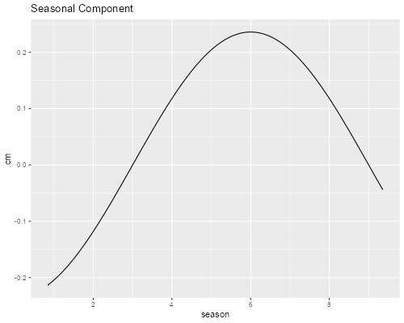

<h2 id="a-growth-curve-model">A Growth Curve Model</h2>
<p>We will replicate the analysis in Goldstein (1995), Sections 6.4 and
6.5 starting on page 91, dealing with the height of school boys measured
on nine occassions between ages 11 and 13. An analysis using MLwiN
macros is available <a href="mln3">here</a>, but we will use Stata and
R.</p>
<h3 id="the-data">The Data</h3>
<p>The data are available on this website as <code>oxboys.dta</code>. We
read the data and plot the individual growth curves. Note that age is
centered at 12.25.</p>

{% include srtabs.html %}

<pre class='stata'>. use https://grodri.github.io/datasets/oxboys.dta, clear
(Data from Goldstein (1995) on children's height on nine occasions)

. twoway  line height age, connect(ascending) color(gs12) ///
>   || scatter height age, color(black) legend(off) ///
>   title(Height of 26 boys at ages 11 to 13) ///
>   xt(Age (centered at 12.25)) yt(Height (cm))

. graph export oxboys.png, width(500) replace 
file oxboys.png saved as PNG format
</pre>
<p></p>
<pre class='r'>> library(haven)
> library(ggplot2)
> library(dplyr)
> oxboys &lt;- read_dta("https://grodri.github.io/datasets/oxboys.dta")
> ggplot(group_by(oxboys, id), aes(age, height, group=id)) + 
+   geom_line(color="#c0c0c0") + geom_point() + 
+   ggtitle("Height of 26 boys at ages 11 to 13")
> ggsave("oxboysr.png", width = 500/72, height = 400/72, dpi = 72)
</pre>
<p></p>
<h3 id="the-basic-model">The Basic Model</h3>
<p>The basic model used by Goldstein is a fourth-degree polynomial on
age, where the constant, linear and quadratic coefficients are random at
the child level with an unstructured variance-covariance matrix.</p>
<p>To this model we add a fixed seasonality component based on the
cosine of the season (month of year) scaled to the range (0, 2π) This
allows us to reproduce the results in Table 6.4 (page 93).</p>
<pre class='stata'>. gen sc = cos( _pi * seas / 6 ) 

. mixed height age age2 age3 age4 sc || id: age age2 ///
>   , mle covariance(unstructured)

Performing EM optimization ...

Performing gradient-based optimization: 
Iteration 0:   log likelihood = -306.79075  
Iteration 1:   log likelihood = -306.79047  
Iteration 2:   log likelihood = -306.79047  

Computing standard errors ...

Mixed-effects ML regression                     Number of obs     =        234
Group variable: id                              Number of groups  =         26
                                                Obs per group:
                                                              min =          9
                                                              avg =        9.0
                                                              max =          9
                                                Wald chi2(5)      =     495.19
Log likelihood = -306.79047                     Prob > chi2       =     0.0000

─────────────┬────────────────────────────────────────────────────────────────
      height │ Coefficient  Std. err.      z    P>|z|     [95% conf. interval]
─────────────┼────────────────────────────────────────────────────────────────
         age │   6.188053   .3485934    17.75   0.000     5.504823    6.871284
        age2 │   2.167004    .450439     4.81   0.000     1.284159    3.049848
        age3 │   .3917649   .1565024     2.50   0.012     .0850259     .698504
        age4 │  -1.552683   .4423419    -3.51   0.000    -2.419657   -.6857086
          sc │  -.2366729   .0676937    -3.50   0.000    -.3693501   -.1039957
       _cons │   148.9111   1.540134    96.69   0.000     145.8925    151.9297
─────────────┴────────────────────────────────────────────────────────────────

─────────────────────────────┬────────────────────────────────────────────────
  Random-effects parameters  │   Estimate   Std. err.     [95% conf. interval]
─────────────────────────────┼────────────────────────────────────────────────
id: Unstructured             │
                    var(age) │   2.755755   .7790235      1.583487     4.79586
                   var(age2) │   .6548079   .2272646      .3316552    1.292829
                  var(_cons) │   61.57218   17.09104      35.73636    106.0862
               cov(age,age2) │   .8782201   .3432101      .2055406      1.5509
              cov(age,_cons) │   7.988801    3.01848      2.072688    13.90491
             cov(age2,_cons) │   1.352481   1.413805     -1.418527    4.123488
─────────────────────────────┼────────────────────────────────────────────────
               var(Residual) │   .1990953   .0225427      .1594715    .2485644
─────────────────────────────┴────────────────────────────────────────────────
LR test vs. linear model: chi2(6) = 1025.99               Prob > chi2 = 0.0000

Note: LR test is conservative and provided only for reference.
</pre>
<pre class='r'>> library(lme4)    
> oxboys &lt;- mutate(oxboys, sc = cos(pi * seas/6))
> bm &lt;- lmer(height ~ age + age2 + age3 + age4 + sc +
+   (age + age2 | id), data = oxboys, REML = FALSE)
> bm
Linear mixed model fit by maximum likelihood  ['lmerMod']
Formula: height ~ age + age2 + age3 + age4 + sc + (age + age2 | id)
   Data: oxboys
      AIC       BIC    logLik  deviance  df.resid 
 639.5809  684.5001 -306.7905  613.5809       221 
Random effects:
 Groups   Name        Std.Dev. Corr     
 id       (Intercept) 7.8461            
          age         1.6601   0.61     
          age2        0.8092   0.21 0.65
 Residual             0.4462            
Number of obs: 234, groups:  id, 26
Fixed Effects:
(Intercept)          age         age2         age3         age4           sc  
   148.9111       6.1881       2.1670       0.3918      -1.5527      -0.2367  
</pre>
<h3 id="adding-serial-correlation">Adding Serial Correlation</h3>
<p>With longitudinal data the assumption of an exchangeable correlation
structure is suspect as outcomes that are closer in time are likely to
be more highly correlated than observations taken further apart.</p>
<p>We extend the model to allow for <em>serially corrrelated</em>
residuals where <em>cov(e<sub>it</sub>, e<sub>it’</sub>) =
σ<sup>2</sup><sub>e</sub> exp{-γ(t’-t)}</em>, which reduces to the
variance when <em>t=t’</em> and decays exponentially to zero as the gap
increases.</p>
<p>Stata allows this form of residual correlation via the option
<code>residuals(exponential, t(</code><em><code>timevar</code></em><code>))</code>.
In R we can specify an equivalent model using
<code>corCAR1(form = ~ age | id)</code> via the <code>correlation</code>
argument in the <code>lme()</code> function in <code>nlme</code>. (A
similar option is not yet available in <code>lme4</code>.) These are
continuous auto-regressive models where the correlation decays with the
age difference between measurements.</p>
<pre class='stata'>. mixed height age age2 age3 age4 sc || id: age age2 ///
>   , mle covariance(unstructured) residuals(exponential, t(age))

Obtaining starting values by EM ...

Performing gradient-based optimization: 
Iteration 0:   log likelihood = -345.48766  (not concave)
Iteration 1:   log likelihood = -334.84897  (not concave)
Iteration 2:   log likelihood = -321.70556  (not concave)
Iteration 3:   log likelihood = -310.38308  (not concave)
Iteration 4:   log likelihood = -308.65828  
Iteration 5:   log likelihood = -308.54058  (not concave)
Iteration 6:   log likelihood = -307.18739  
Iteration 7:   log likelihood = -306.11141  
Iteration 8:   log likelihood = -305.77252  
Iteration 9:   log likelihood = -305.76028  
Iteration 10:  log likelihood = -305.76024  
Iteration 11:  log likelihood = -305.76024  

Computing standard errors ...

Mixed-effects ML regression                     Number of obs     =        234
Group variable: id                              Number of groups  =         26
                                                Obs per group:
                                                              min =          9
                                                              avg =        9.0
                                                              max =          9
                                                Wald chi2(5)      =     502.97
Log likelihood = -305.76024                     Prob > chi2       =     0.0000

─────────────┬────────────────────────────────────────────────────────────────
      height │ Coefficient  Std. err.      z    P>|z|     [95% conf. interval]
─────────────┼────────────────────────────────────────────────────────────────
         age │   6.190767   .3508538    17.64   0.000     5.503106    6.878427
        age2 │    2.16322   .4493732     4.81   0.000     1.282465    3.043976
        age3 │    .386329   .1690328     2.29   0.022     .0550307    .7176272
        age4 │  -1.548466   .4293597    -3.61   0.000    -2.389996   -.7069366
          sc │  -.2360017   .0673323    -3.51   0.000    -.3679705   -.1040328
       _cons │    148.911   1.539374    96.73   0.000     145.8939    151.9281
─────────────┴────────────────────────────────────────────────────────────────

─────────────────────────────┬────────────────────────────────────────────────
  Random-effects parameters  │   Estimate   Std. err.     [95% conf. interval]
─────────────────────────────┼────────────────────────────────────────────────
id: Unstructured             │
                    var(age) │   2.680292   .7684798      1.528023    4.701477
                   var(age2) │   .5745081   .2315774      .2607275    1.265917
                  var(_cons) │   61.47597   17.07295      35.67072    105.9495
               cov(age,age2) │   .8524706   .3363216      .1932923    1.511649
              cov(age,_cons) │   7.930183    2.99215      2.065677    13.79469
             cov(age2,_cons) │   1.479247   1.405027     -1.274554    4.233049
─────────────────────────────┼────────────────────────────────────────────────
Residual: Exponential        │
                         rho │   .0010001   .0032199      1.81e-06    .3566105
                      var(e) │   .2345988   .0463248      .1593104    .3454677
─────────────────────────────┴────────────────────────────────────────────────
LR test vs. linear model: chi2(7) = 1028.05               Prob > chi2 = 0.0000

Note: LR test is conservative and provided only for reference.
</pre>
<pre class='r'>> library(nlme)
> s1 &lt;- lme(height ~ age + age2 + age3 + age4 + sc,
+   random = ~ age + age2 | id, data=oxboys, method="ML")
> s2 &lt;- update(s1, correlation = corExp(form = ~ age | id))
> s2
Linear mixed-effects model fit by maximum likelihood
  Data: oxboys 
  Log-likelihood: -305.7602
  Fixed: height ~ age + age2 + age3 + age4 + sc 
(Intercept)         age        age2        age3        age4          sc 
148.9109931   6.1907665   2.1632206   0.3863293  -1.5484665  -0.2360017 

Random effects:
 Formula: ~age + age2 | id
 Structure: General positive-definite, Log-Cholesky parametrization
            StdDev    Corr        
(Intercept) 7.8406731 (Intr) age  
age         1.6371701 0.618       
age2        0.7579632 0.249  0.687
Residual    0.4843507             

Correlation Structure: Exponential spatial correlation
 Formula: ~age | id 
 Parameter estimate(s):
    range 
0.1447617 
Number of Observations: 234
Number of Groups: 26 
</pre>
<p>Here are the fitted curves, obtained using the ML estimates of the
fixed effects and the EB estimates of the random effects:</p>
<pre class='stata'>. predict fv, fitted

. sort id age

. local model _b[_cons] + _b[age]*x + _b[age2]+x^2 + _b[age3]*x^3 + _b[age4]*x^4

. twoway function y = `model', range(-1 1) lw(thick) color(blue) ///
>   || line fv age , connect(ascending) color(black) ///
>   xt(Age (centered at 12.25)) yt(Height (cm)) ///
>   legend(off) title(Fitted Growth Curves)

. graph export oxboysfits.png, width(500) replace
file oxboysfits.png saved as PNG format
</pre>
<p></p>
<pre class='r'>> oxboys &lt;- mutate(oxboys, fv = predict(s2))
> ggplot(group_by(oxboys, id), aes(age, fv, group=id)) + 
+   geom_point(aes(age, height), color="#c0c0c0") + geom_line() + 
+   ggtitle("Fitted Growth Curves")
> ggsave("oxboysfitsr.png", width = 500/72, height = 400/72, dpi = 72)
</pre>
<p></p>
<p>The curves reflect substantial variation in growth curves across
children, with large differences in average height.</p>
<p>The coefficient of the cosine term or amplitude is estimated at
-0.236. We can plot the estimated curve for the range of the data</p>
<pre class='stata'>. twoway function y = _b[sc] * cos(_pi * x/6), range(0.84 9.36) ///
>     title(Seasonal Component) xt(Season) yt(cm)

. graph export oxboysseasons.png, width(500) replace
file oxboysseasons.png saved as PNG format
</pre>
<p></p>
<pre class='r'>> x &lt;- seq(0.84, 9.36, 0.01)
> seas &lt;- data.frame(season = x, 
+     cm = fixef(s2)["sc"] * cos(pi*x/6))
> ggplot(seas, aes(season, cm)) + geom_line() +
+     scale_x_continuous(breaks=seq(2,8,2)) +
+     ggtitle("Seasonal Component")
> ggsave("oxboysseasonsr.png", width = 500/72, height = 400/72, dpi = 72)
</pre>
<p></p>
<p>The estimates show that boys grow about half a centimeter more in the
summer than in the winter.</p>
<p>For residuals with a gap ot <em>t</em> the serial correlation is
<em>ρ(t) = exp{-γ t}</em>. We estimate γ as 6.91. Both Stata and R
report ρ(1) = 0.001, but we can solve for γ. The plot below shows the
correlation function in (0,1) but we label the axis in months</p>
<pre class='stata'>. scalar rho = invlogit(_b[r_logitr1:_cons])

. scalar gamma = -log(rho)

. mata exp(-st_numscalar("gamma"):*(0.25,.50,.75))
                 1             2             3
    ┌───────────────────────────────────────────┐
  1 │  .1778326191   .0316244404   .0056238571  │
    └───────────────────────────────────────────┘

. twoway function y=exp(-6.907647*x/12), range(0 12) ///
>     title(Serial Correlation of Residuals) ///
>     yt("r(t)") xt(t (in months)) xlab(0(3)12)

. graph export oxboysrho.png, width(500) replace
file oxboysrho.png saved as PNG format
</pre>
<p></p>
<pre class='r'>> gamma &lt;- -6.907647
> exp(gamma * 1:3/4)
[1] 0.17783275 0.03162449 0.00562387
> months &lt;- seq(0, 12, 0.1)
> serial = data.frame(months = months,
+     rho = exp(gamma * months/12))
> ggplot(serial, aes(months, rho)) + geom_line() +
+     scale_x_continuous(breaks = seq(0,12,2)) +
+     ggtitle("Serial Correlation of Residuals")
> ggsave("oxboysrhor.png", width = 500/72, height = 400/72, dpi = 72)
</pre>
<p></p>
<p>The correlation between residuals is 0.178 after 3 months and falls
to 0.032 after 6 months.</p>
<h3 id="correlation-between-outcomes">Correlation Between Outcomes</h3>
<p>The serial correlation is just part of the correlation between
outcomes in the same child. Let us calculate the correlation between
heights at ages 11.25 and 11.5 for child <em>i</em>.</p>
<p>Those outcomes involve the random effects <em>(a<sub>i</sub>,
b<sub>i</sub>, c<sub>i</sub>, e<sub>i1</sub>, e<sub>i2</sub>)’</em>,
which have variance-covariance matrix <em>V</em>.</p>
<p>The random part of the heights at those ages is a linear combination
of those random effects with coefficients <em>C</em> given below, so
their variance-covariance is given by <em>C V C’</em>:</p>
<pre class='stata'>. estat recov // extract variance-covariance of random effects

Random-effects covariance matrix for level id

             │       age       age2      _cons 
─────────────+─────────────────────────────────
         age │  2.680292                       
        age2 │  .8524706   .5745081            
       _cons │  7.930183   1.479247   61.47597 

. mata:
───────────────────────────────────────────────── mata (type end to exit) ──────
:   V = st_matrix("r(cov)")

:   b = st_matrix("e(b)")

:   s2e = exp(2*b[13])             // error variance

:   rho = invlogit(b[14])^0.25  // serial correlation

:   E =  (s2e, s2e * rho \ s2e * rho, s2e)

:   Z = J(3,2,0)

:   V = V, Z \ Z', E

:   C = (-1, 1, 1, 1, 0 \ -0.75, 0.75^2, 1, 0, 1)

:   A = C * V * C'

:   D = diag(1:/sqrt(diagonal(A)))

:   D * A * D
[symmetric]
                 1             2
    ┌─────────────────────────────┐
  1 │            1                │
  2 │  .9955685415             1  │
    └─────────────────────────────┘

: end 
────────────────────────────────────────────────────────────────────────────────
</pre>
<pre class='r'>> V &lt;- getVarCov(s2)
> s2e &lt;- s2$sigma^2
> rho &lt;- 0.1778327566
> E &lt;- matrix( c(s2e, s2e * rho, s2e * rho, s2e), 2, 2)
> zero &lt;- matrix(0, 3, 2)
> V &lt;- rbind(cbind(V, zero), cbind(t(zero),E))
> # intercept is first
> C &lt;- matrix(c(1, -1, 1, 1, 0,  1, -0.75, 0.75^2, 0, 1), 2, 5, byrow = TRUE)
> A &lt;- C %*% V %*% t(C)
> D &lt;- diag(1/sqrt(diag(A)))
> D %*% A %*% D 
          [,1]      [,2]
[1,] 1.0000000 0.9955686
[2,] 0.9955686 1.0000000
</pre>
<p>This leads to a correlation of 0.996. The observed correlation, which
is easy to obtain if we recast the data in wide format, is also
0.996.</p>
<h3 id="the-deviance-table">The Deviance Table</h3>
<p>We now calculate reductions in deviance starting from the population
average model, letting the intercept, slope and curvature be random, and
finally allowing for serial correlation</p>
<pre class='stata'>. quietly xtmixed height age age2 age3 age4 sc, mle

. estimates store ols

. quietly xtmixed height age age2 age3 age4 sc || id: , mle

. estimates store ri

. lrtest ols .

Likelihood-ratio test
Assumption: ols nested within ri

 LR chi2(1) = 712.33
Prob > chi2 = 0.0000

Note: The reported degrees of freedom assumes the null hypothesis is not on
      the boundary of the parameter space. If this is not true, then the
      reported test is conservative.

. quietly xtmixed height age age2 age3 age4 sc || id: age ///
>   , mle covariance(unstructured)

. estimates store rs

. lrtest ri .

Likelihood-ratio test
Assumption: ri nested within rs

 LR chi2(2) = 260.73
Prob > chi2 = 0.0000

Note: The reported degrees of freedom assumes the null hypothesis is not on
      the boundary of the parameter space. If this is not true, then the
      reported test is conservative.

. quietly xtmixed height age age2 age3 age4 sc || id: age age2 ///
>   , mle covariance(unstructured)

. estimates store rq

. lrtest rs .

Likelihood-ratio test
Assumption: rs nested within rq

 LR chi2(3) =  52.93
Prob > chi2 = 0.0000

Note: The reported degrees of freedom assumes the null hypothesis is not on
      the boundary of the parameter space. If this is not true, then the
      reported test is conservative.

. quietly xtmixed height age age2 age3 age4 sc || id: age age2 ///
>   , mle covariance(unstructured) residuals(exponential, t(age))

. lrtest rq .

Likelihood-ratio test
Assumption: rq nested within .

 LR chi2(1) =   2.06
Prob > chi2 = 0.1512
</pre>
<pre class='r'>> mf &lt;- height ~ age + age2 + age3 + age4 + sc
> m0 &lt;- lm(mf, data = oxboys)
> m1 &lt;- lme(mf, random = ~ 1 | id, data = oxboys, method = "ML")
> cat("0 vs 1", "L.Ratio = ", 2*(logLik(m1) - logLik(m0)),"\n")     
0 vs 1 L.Ratio =  712.3291 
> m2 &lt;- update(m1, random = ~ age | id, method="ML")
> m3 &lt;- update(m2, random = ~ age + age2 | id)
> m4 &lt;- update(m3, correlation = corCAR1(form = ~ age | id))
> anova(m1, m2, m3, m4)   
   Model df      AIC      BIC    logLik   Test   L.Ratio p-value
m1     1  8 943.2427 970.8853 -463.6213                         
m2     2 10 686.5144 721.0677 -333.2572 1 vs 2 260.72824  &lt;.0001
m3     3 13 639.5809 684.5001 -306.7905 2 vs 3  52.93350  &lt;.0001
m4     4 14 639.5205 687.8950 -305.7602 3 vs 4   2.06045  0.1512
</pre>
<p>All tests are on a boundary of the parameter space and thus are
conservative. They are all significant except for serial
correlation.</p>
